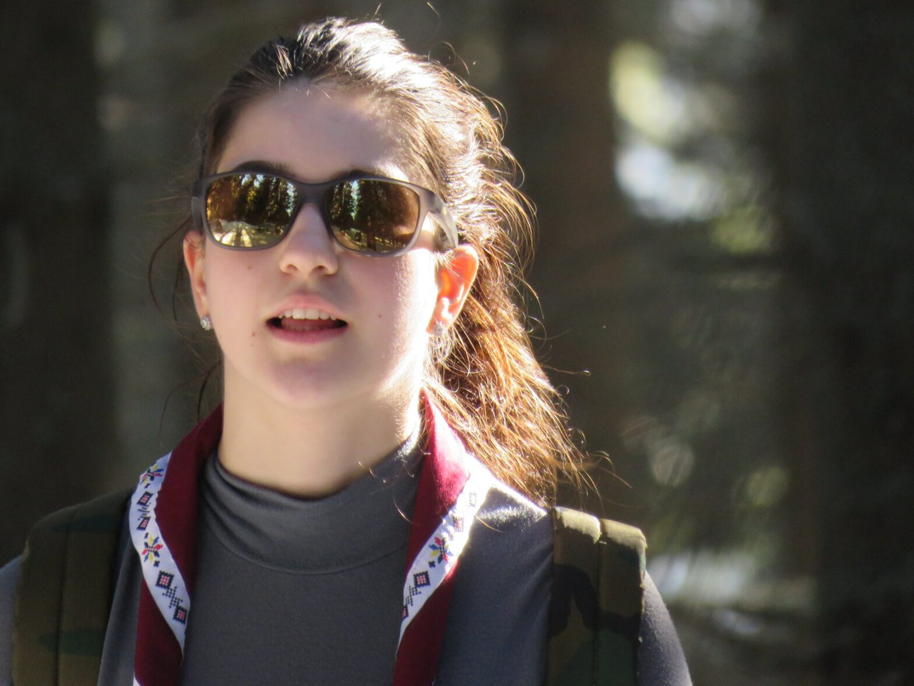

„Cu pași grăbiți, dar totuși înceți" — jurnalul Aidei

Aida a dorit să împărtășească și ea cu noi experiențele din campul de iarnă. Iată ce a scris:
Ne-am întâlnit la ora 9 în autogară, lucru complet necaracteristic nouă, ținând cont că de obicei plecăm cu noaptea în cap. Totuși, la ora potrivită eram ajunși la cabana Voina, împărțind mâncarea între noi și pregătind-ne de drumul spre Cabana Cuca, unde aveam să ne petrecem următoarele 5 zile, care pot fi rezumate ușor:
2 februarie, prima zi: am ajuns la cabană, am mâncat și apoi Anna, Panait și Ovidiu ne-au delectat cu o sesiune informativă și interactivă despre cercetășie, oferindu-le ocazia noilor veniți și celor mai micuți să înțeleagă mai bine istoria cercetășiei. A urmat un moment spiritual, care a constat într-o poveste de groază despre Grigore Moale, un personaj care a ajuns foarte îndrăgit spre finalul ieșirii 🙂
3 februarie, ziua a 2-a: ne am echipat și, cu mic cu mare am pornit pe traseu, înspre stână. Odată ajunși, am mâncat cremwurstii cărați până sus și am vorbit cu cine am avut de vorbit la telefon, pentru că la cabană nu aveam semnal. Ne-am întors, în stilul nostru caracteristic, pe întuneric, dar mai apropiați decât am plecat. Am mâncat paste pe săturate și ne-am despărțit de temerari pentru a avea loc un moment spiritual mai personal, care ne-a pregătit mai mult sau mai puțin pentru ce avea să mai urmeze.
4 februarie, ziua a 3-a: am avut parte de un atelier de noduri susținut de Ovidiu, fapt ce a rezultat într-o trădare la nivel înalt din partea temerarilor în ceea ce va urma, apoi curățenie generală și, în sfârșit, mult așteptată răsplată pe care a primit-o Ovidiu în urma atelierului de noduri 🙂 După atelier și masa de prânz, temerarii ne-au invitat, încrezători, la o bătaie în zăpadă, la care s-a alăturat fericit cățelul de la cabană și i-a marcat puțintel pe câțiva dintre noi. În timp ce cățelușul își făcea de cap, temerarii își luau revanșă pentru capturarea coechipierilor lor de către echipa adversă. O tentativă de capturare asupra lui Ovidiu cu ajutorul unei sfori și un foarte vesel “Mulțumim pentru noooduri, Oviiidiuuu” și-au spus cuvântul. Ne-am îndreptat ușor spre foișor, câțiva la tăiat de lemne și câțiva la dat zăpadă, cu scopul de a construi un iglou, lucru care ne a obosit pe toți măcar un pic. Am intrat într-un final si în cabană iar, după masa de seară, ne am pregătit de TedEx, unde am învățat despre prietenie, despre cum să menținem un mod de viață sănătos, despre detectarea minciunilor, despre samurai și despre esența ființei lui Seba.
5 februarie, ziua a 4-a: atelier interactiv de supraviețuire, urmat de o ieșire însorită și foarte liniștită, din care ne am întors, surprinzător, pe lumină, o lansare de rachetă în speranță de a-l contacta pe Chewbacca, un super bal cu meniu personalizat după nevoile sau poftele fiecărui monstru, complet cu o prezentare în detaliu care să ne ajute să ne cunoaștem toți cât mai bine. După ce ne-am săturat din supica cu tăiței pe care ne-a servit-o Casper (Ana Mică), ne-am retras pe unități și am avut parte de încă un moment spiritual, care ne-a oferit tuturor o ocazie să ne descoperim pe noi înșine.
6 februarie, ultima zi:( : am lăsat cabana “mai curată decât am găsit-o” și, după o sesiune de poze, ne-am îndreptat cu pași grăbiți dar totuși înceți înspre Cabana Voina, de unde urma să luăm autocarul înspre casă.
Aida, eXplorator